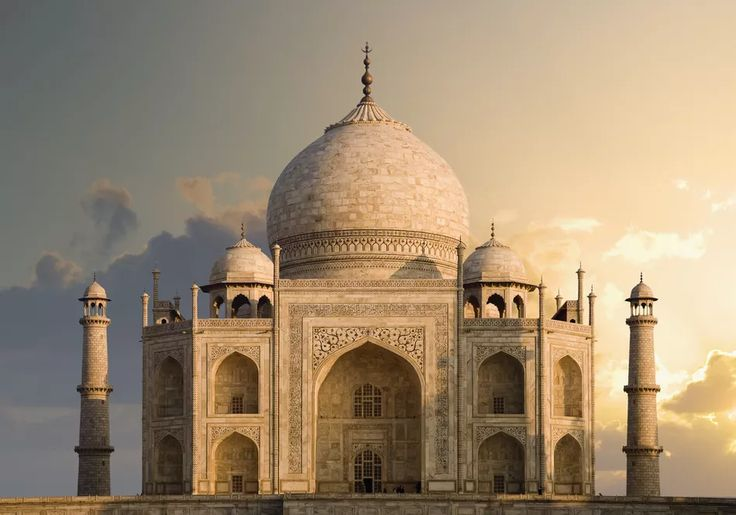

The Taj Mahal is an ivory-white marble mausoleum on the south bank of the Yamuna river in the Indian
city of
Agra. It was commissioned in 1632 by the Mughal emperor, Shah Jahan (reigned from 1628 to 1658), to house
the tomb of his favourite wife, Mumtaz Mahal. The tomb is the centrepiece of a 17-hectare (42-acre)complex,
which includes a mosque and a guest house, and is set in formal gardens bounded on three sides by a
crenellated wall.
Construction of the mausoleum was essentially completed in 1643 but work continued on other phases of the
project for another 10 years. The Taj Mahal complex is believed to have been completed in its entirety in
1653 at a cost estimated at the time to be around 32 million rupees, which in 2015 would be approximately
52.8 billion rupees (U.S. $827 million). The construction project employed some 20,000 artisans under the
guidance of a board of architects led by the court architect to the emperor, Ustad Ahmad Lahauri.


Great Wall of China, extensive bulwark erected in ancient China, one of the largest building-construction
projects ever undertaken. The Great Wall actually consists of numerous walls—many of them parallel to each
other—built over some two millennia across northern China and southern Mongolia. The most extensive and
best-preserved version of the wall dates from the Ming dynasty (1368–1644) and runs for some 5,500 miles
(8,850 km) east to west from Mount Hu near Dandong, southeastern Liaoning province, to Jiayu Pass west of
Jiuquan, northwestern Gansu province. This wall often traces the crestlines of hills and mountains as it
snakes across the Chinese countryside, and about one-fourth of its length consists solely of natural
barriers such as rivers and mountain ridges. Nearly all of the rest (about 70 percent of the total length)
is actual constructed wall, with the small remaining stretches constituting ditches or moats. Although
lengthy sections of the wall are now in ruins or have disappeared completely, it is still one of the more
remarkable structures on Earth. The Great Wall was designated a UNESCO World Heritage site in 1987.
Chichén Itzá was a major focal point in the Northern Maya Lowlands from the Late Classic (c. AD 600–900)
through the Terminal Classic (c. AD 800–900) and into the early portion of the Postclassic period (c. AD
900–1200). The site exhibits a multitude of architectural styles, reminiscent of styles seen in central
Mexico and of the Puuc and Chenes styles of the Northern Maya lowlands. The presence of central Mexican
styles was once thought to have been representative of direct migration or even conquest from central
Mexico, but most contemporary interpretations view the presence of these non-Maya styles more as the result
of cultural diffusion.Chichén Itzá was one of the largest Maya cities and it was likely to have been one of
the mythical great cities, or Tollans, referred to in later Mesoamerican literature. The city may have
had the most diverse population in the Maya world, a factor that could have contributed to the variety of
architectural styles at the site.

The area around Petra has been inhabited from as early as 7000 BC, and was settled by the Nabataeans, a
nomadic Arab people, in the 4th century BC. Petra would later become the capital city of the Nabataean
Kingdom in the second century BC. The Nabataeans invested in Petra's proximity to the incense trade
routes by establishing it as a major regional trading hub, which gained them considerable revenue.
Unlike their enemies, the Nabataeans were accustomed to living in the barren deserts and thus were able to
defend their kingdom. They were particularly skillful in agriculture, stone carving, and rainwater
harvesting.
Petra flourished in the 1st century AD, when its Al-Khazneh structure, possibly the mausoleum of Nabataean
king Aretas IV, was constructed, and its population peaked at an estimated 20,000 inhabitants. Nabataea
fell to the Romans in 106 AD, who annexed and renamed it as Arabia Petraea. Petra's importance declined
as sea trade routes emerged, and after an earthquake in 363 destroyed many structures. In the Byzantine era,
several Christian churches were built, but the city continued to decline and, by the early Islamic era, it
was abandoned except for a handful of nomads. It remained unknown to the western world until 1812, when
Swiss traveller Johann Ludwig Burckhardt rediscovered it.
The Inca civilization had no written language and following the first encounter by the Spanish soldier
Baltasar Ocampo, no Europeans are recorded to have visited the site from the late 16th century until the
19th century. As far as historical knowledge extends, there are no existing written records detailing the
site during its period of active use. The names of the buildings, their supposed uses, and their
inhabitants, are the product of modern archaeologists based on physical evidence, including tombs at the
site. Machu Picchu was built in the classical Inca style, with polished dry-stone walls. Its three primary
structures are the Temple of the Sun, the Temple of the Three Windows, and the Intihuatana. From 1929 to
1971, Machu Picchu underwent extensive restoration and conservation work, including structural stabilization
and artifact excavation, driven by government initiatives and research expeditions. Most recent
archaeologists believe that Machu Picchu was constructed as an estate for the Inca emperor Pachacuti
(1438–1472). The Inca built the estate around 1450 but abandoned it a century later, at the time of the
Spanish conquest. According to the new AMS radiocarbon dating, it was occupied from c. 1420–1532.
Historical research published in 2022 claims that the site was probably called Huayna Picchu by the Inca
people themselves, as it exists on the smaller peak of the same name.


The Colosseum is an elliptical amphitheatre in
the centre of the city of Rome, Italy, just east of the Roman Forum. It is the largest ancient amphitheatre
ever built, and is still the largest standing amphitheatre in the world, despite its age. Construction began
under the Emperor Vespasian in 72 and was completed in AD 80 under his successor and heir,
Titus Further modifications were made during the reign of Domitian The three
emperors who were patrons of the work are known as the Flavian dynasty, and the amphitheatre was named the
Flavian Amphitheatre by
later classicists and archaeologists for its association with their family name (Flavius).
The Colosseum is built of travertine limestone, tuff (volcanic rock), and brick-faced concrete. It could
hold an estimated 50,000 to 80,000 spectators at various points in its history, having an average
audience of some 65,000 it was used for gladiatorial contests and public spectacles including animal
hunts, executions, re-enactments of famous battles, dramas based on Roman mythology, and briefly mock sea
battles. The building ceased to be used for entertainment in the early medieval era. It was later reused for
such purposes as housing, workshops, quarters for a religious order, a fortress, a quarry, and a Christian
shrine.
Although substantially ruined by earthquakes and stone robbers taking spolia, the Colosseum is still a
renowned symbol of Imperial Rome and was listed as one of the New 7 Wonders of the World. It is one of
Rome's most popular tourist attractions and has links to the Catholic Church, as each Good Friday the Pope
leads a torchlit "Way of the Cross" procession that starts in the area around the Colosseum. The
Colosseum is depicted on the Italian version of the 5 euro cent coin.